콘쥬게이션 화합물과 자외선 분광법
많은 서로 다른 종류의 콘쥬게이션 화합물은 자연에서 흔하게 존재한다. 예를 들면 토마토의 라이코펜은 콘쥬게이션 폴리엔이다. 콘쥬게이션 엔온(알켄,케톤)은 생물학적으로 중요한 분자들에게서 흔하게 볼 수 있는 구조이다. 여기서 우리는 콘쥬게이션 분자의 독특한 성질과 그에 대한 원리를 살펴볼 것이다.
콘쥬게이션 화합물이라 불리는, 단일 결합과 이중결합이 교대로 들어가있는 화합물은 독특한 특성을 가지고 있다.
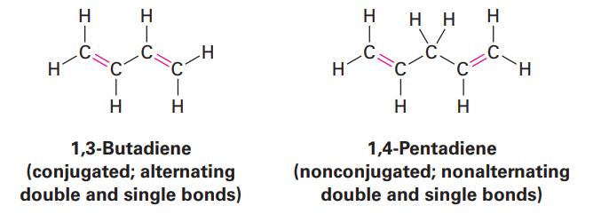
위는 1,3위치에 이중결합이 들어간 부타 다이엔인데, 이는 콘쥬게이션이 되지 않은 1,4펜타 다이엔과 매우 다른 성질을 가진다. 같은 다이엔이지만 콘쥬게이션(단일-이중 교대)구조가 분자에 영향을 주는 것이다.
1)콘쥬게이션 다이엔의 안정성: 분자 오비탈 이론
콘쥬게이션 다이엔의 합성은 알켄의 제법들로부터 합성될 수 있다. 이렇게 만들어지는 간단한 콘쥬게이션 다이엔들에는 아이소프렌이라고 불리는 2-methyl-1,3-butadiene이 있다.
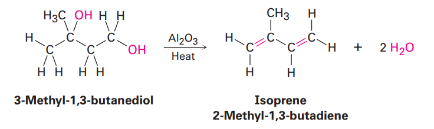
이것들은 그냥 공업적인 반응이라 알아만두면 된다.
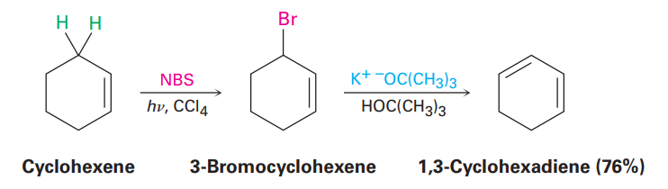
그 중 할로젠화 알킬로부터 염기에 의한 HX를 제거하는 반응으로 콘쥬게이션 다이엔을 만드는 제법이 가끔 출제된다.
콘쥬게이션의 특징 1:구조 중앙에 있는 단일 결합의 길이가 짧다
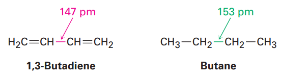
콘쥬게이션이 되어있으면 결합길이가 6pm정도 더 짧다.
콘쥬게이션의 특징 2: 안정성
2-methylpropene과 같이 이치환된 알켄은 -119kj/mol의 에너지를 가진다. 반면 1-butene과 같은 일치환 알켄은 -126kj/mol의 에너지를 가진다.즉 더 많이 치환될수록 에너지가 낮아 안정적인 모습을 보인다.
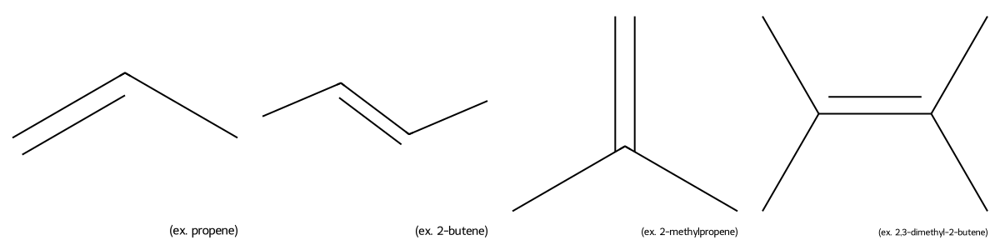
일치환 알켄의 수소화열이 -126이므로, 두 개의 일치환 이중 결합을 갖는 화합물은 일치환 알켄의 두 배에 해당하는 -252를 가질 것으로 예측할 수 있다.
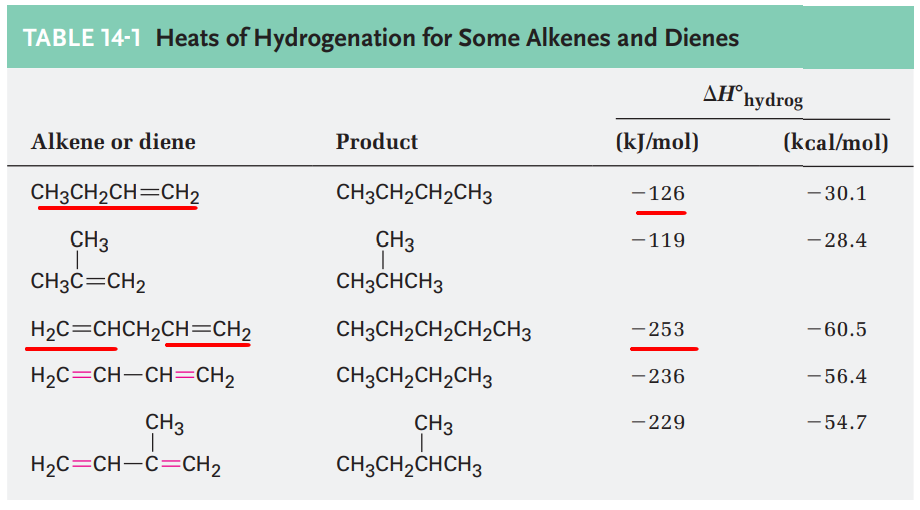
이건 콘쥬게이션이 되지 않은 화합물에서 일치한다. 그러나 바로 밑의 콘쥬게이션 된 화합물의 경우 일치환된 알켄이 두개 있는데도 불구하고 에너지 레벨이 예상보다 낮은 것을 알 수 있다.
이러한 안정성의 이유는 무엇인가? 이는 원자가 결합 이론으로 설명할 수 있다.
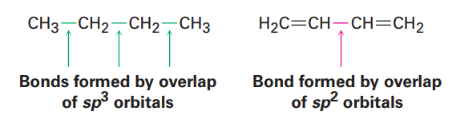
이는 단일결합으로 이어질 경우에는 sp3결합이 있지만, 단일 이중 교대로 나올때에는 중간 결합이 sp2라 길이가 더 짧고, 이로 인해 핵에 더 가까이 존재하면서 결합이 쎄진다는 이론으로 표현할 수 있다.
분자 오비탈 이론으로도 이를 설명할 수 있다. 분자 오비탈 이론이란 서로 다른 원자들의 원자 오비탈(AO)들이 수학적으로 조합되어 분자 오비탈(MO)를 형성하며 결합을 만든다는 이론이다.
원자 하나하나에서는 전자가 원자 오비탈(s, p, d 같은 방 모양)에 들어가 있다. 원자들이 모여 분자를 만들면 → 오비탈도 같이 합쳐져서 분자 오비탈이라는 새 공간이 생긴다. 이때 오비탈끼리 만날때 다음 두 가지 오비탈 케이스가 생긴다.
결합 오비탈 (bonding orbital)
원자 오비탈이 “서로 겹쳐서 잘 어울릴 때” 생김
전자가 들어가면 원자 사이를 더 강하게 붙여 줌 → 안정화
반결합 오비탈 (antibonding orbital, σ or π)
오비탈이 “서로 위상이 안 맞아서 충돌할 때” 생김
전자가 들어가면 오히려 결합을 약화시킴
이때 결합성 오비탈의 경우 잘 어울리면서 안정되고 형태가 유지되는 오비탈이 생성되지만, 반결합성 오비탈의 경우 충돌로 인해 서로 마디라고 부르는, 접점이 존재하게 된다.
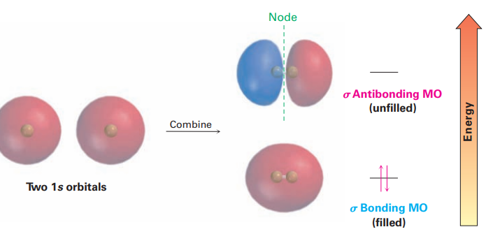 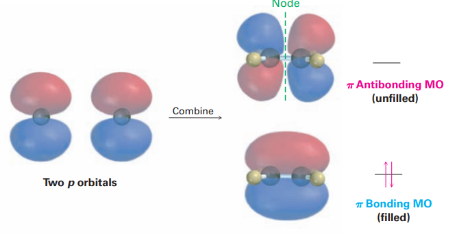
이 이론에 따르면 두 개의 P 원자 오비탈이 만날 경우 결합성 오비탈 또는 반결합성 분자 오비탈이 만들어 질 수 있다.
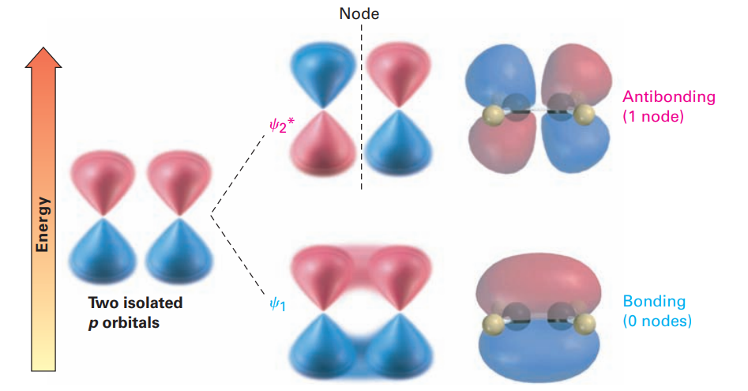
콘쥬게이션 다이엔에서 형성되는 네 개의 인접한 p원자 오비탈의 조합을 살펴보자.
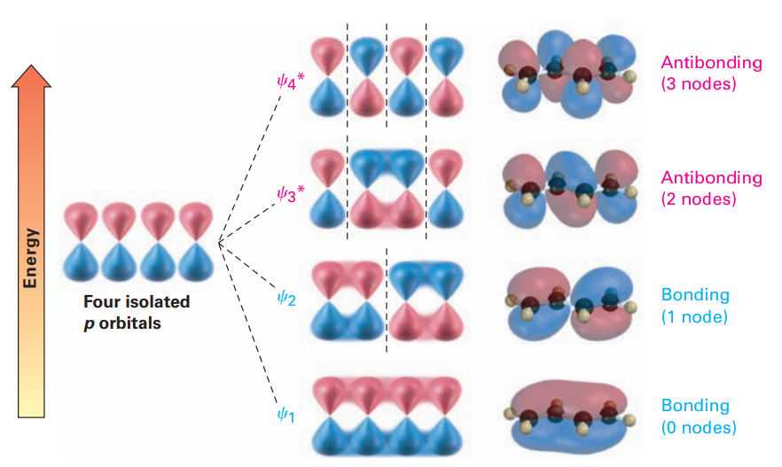
이때 2개의 결합성과 2개의 반결합성 오비탈이 만들어진다. 이때 결합성 오비탈은 원래p보다 더 결합 에너지가 낮아진다. 또 여기에는 노드가 없어서, 전자가 존재할 수 있는 공간이 넓어지는 비편재화가 발생해서 에너지를 낮게 해준다.
2)콘쥬게이션 다이엔에 친전자성 첨가: 알릴 탄소 양이온
콘쥬게이션 다이엔과 전형적인 알켄 사이의 가장 뚜렷한 차이점 중 하나는 그들의 친전자성 첨가 반응이다. 간단히 복습해보면, 탄소-탄소 이중 결합에 친전자체가 첨가하는 반응은 알켄의 일반적인 반응이다. 이때 반응 중간체로 더 안정한 탄소양이온이 형성되기 때문에 markovnikov 위치 화학이 나타난다.
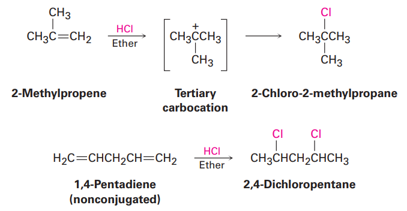
이때 친전자성 첨가 반응은 항상 생성물의 혼합물이 얻어진다. 예를 들면, 1,3-butadiene에 HBr을 첨가하면 두 가지 혼합 생성물이 생성된다.
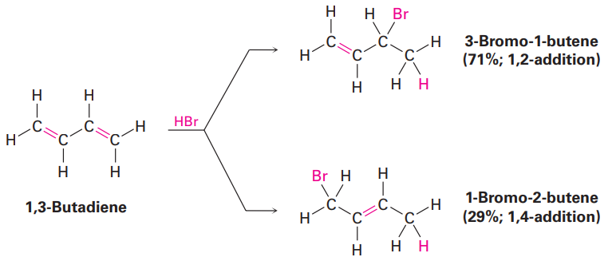
1,2 첨가 / 1,4첨가라고 있는데, 이거는 1,2번에 추가물이 첨가되는지 1,4번에 추가물이 첨가되는지를 보는 것이다. 뒤에있는 숫자쪽에 br이 붙는다.
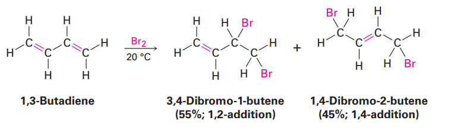
HX외에도 다른 친전자체도 콘쥬게이션 다이엔에 첨가되는데, 이때도 혼합물이 발생한다. 왜 이런 혼합물이 발생할까?
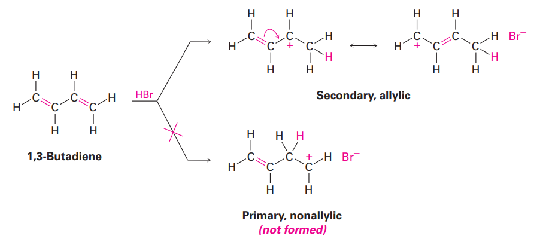
먼저 다이엔에 HBr이 접촉할 경우, 결합 하나가 끊어지면서 H가 붙게 되는데, 이때 1번탄소와 2번탄소 중 수소가 붙을 하나를 택할 수 있다. 그런데 이때 2번에 붙는 것보다 1번 탄소에 붙고 2번 탄소에 + 전하가 남는게 알릴 양이온이 되어 더 안정하다. 이때 알릴기는 공명을 하게 되며 이것의 비율에 따라 생성물이 결정되는 것이다.
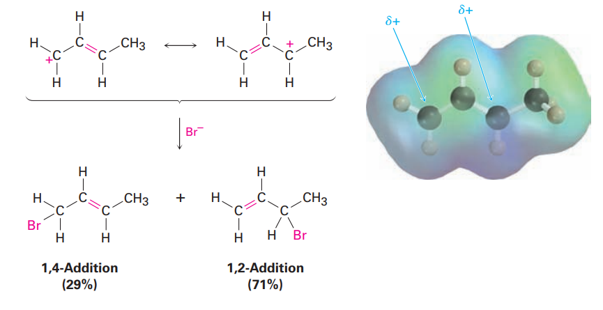
이때 1,4첨가 생성물이 내부에 이중결합이 존재하면서 더 안정하지만, 적게 생성된다.
1,2첨가 생성물은 말단 이중결합이 존재하면서 불안정하나 양이 많다.
중간체를 생각해보면 1,2첨가 생성물 중간체가 더 안정하다. 이러한 안정도 차이 때문에 반응의 활성화에너지에 차이가 발생한다. 이는 반응속도의 차이로 이어지고 곧 선택성의 차이로 이어진다. (1,2-첨가 반응의 E값이 더 낮다)
3)반응의 속도론적 지배와 열역학적 지배
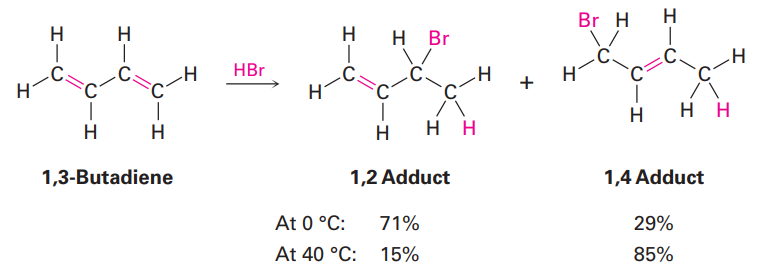
다이엔에 HBr첨가시 생성물의 비율이 다른데, 온도를 올리니 이 비율이 달라졌다. 온도를 올릴 경우 1,4 첨가 생성물이 더 많다.
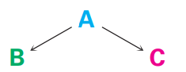
이는 B가 더 빠르게 생성되지만, C가 더 안정한 경우에 발생한다. 반응 온도가 낮을 때는 속도론의 지배를 받아 빨리 생성되는(즉 활성화 에너지가 낮은) 생성물이 먼저 생성된다. 그러나 반응온도가 충분하면 이때는 가역적인 반응이 되고 가장 안정한 생성물이 제일 많이 생성된다.
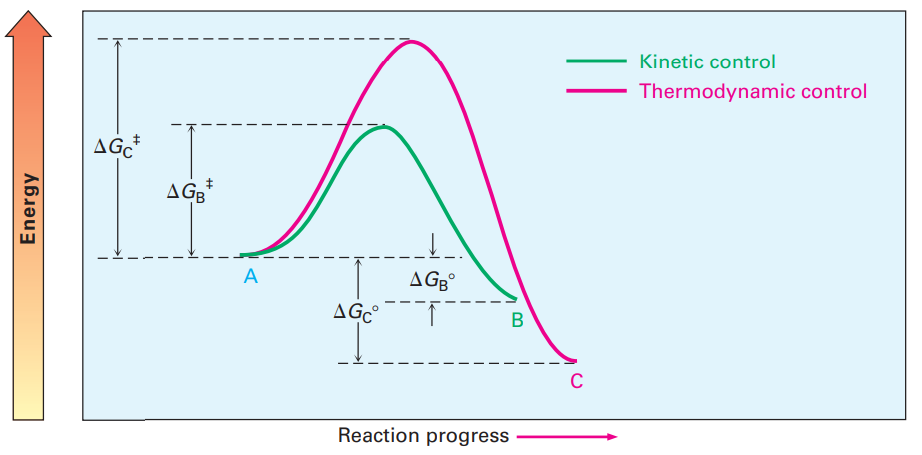
즉 속도론적 지배를 받을 때에는 1,2첨가가 많고, 온도가 높으면 1,4 첨가가 많다.